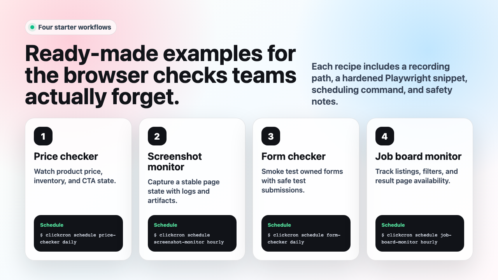

Checks that heal themselves.
ClickCron records browser clicks and runs them as scheduled checks. When the site changes and a selector breaks, it repairs the selector with AI — verifies the fix, saves it back, and keeps the check green. Record once. Run forever.

From a browser click to a scheduled check in three steps
Manual browser checks are easy to forget and annoying to repeat. ClickCron gives you a tiny, repo-friendly workflow instead.
Record
Capture a browser flow once with clickcron record and
save it as a portable Playwright script in your repo.
Run
Replay locally or in CI with clickcron run. Every run
leaves logs, screenshots, and a structured
result.json.
Schedule
Pick an alias or raw cron with clickcron schedule.
ClickCron writes a GitHub Actions workflow for you.
Built for checks you should never have to babysit
Tiny enough to live in any repo, structured enough to debug and share.
Price & inventory
Monitor prices, stock, and content changes on the pages you care about.
Form smoke tests
Make sure your sign-up and contact flows still work after every deploy.
Screenshot sanity
Capture visual snapshots so regressions are obvious, not buried.
Dashboards & tools
Watch job boards, internal dashboards, and admin panels on a schedule.
Audit-ready artifacts
Execution log, result.json, and screenshots for every
single run.
CI-native
Generates a GitHub Actions workflow plus a local-cron template — your choice.
One small CLI, the whole loop
Record, run, list, schedule, and export — everything lives next to your code.
Schedule with aliases or raw cron
Use a friendly alias or a 5-field cron expression — ClickCron handles the rest.
Quickstart in four lines
Clone, install, build, and you're recording flows.
Ready-made recipes to copy
Start from a working example and adapt it to your own pages.
💲 Price checker →
Track a price and fail the run when it crosses your threshold.
📸 Screenshot monitor →
Capture a page on a schedule and keep a visual history.
🧪 Form checker →
Smoke-test a critical form end to end after every deploy.
📋 Job board monitor →
Watch a board for new listings and get audit-ready results.

Record your first check in minutes
Open source, MIT licensed, and built to live right inside your repo. No accounts, no lock-in.